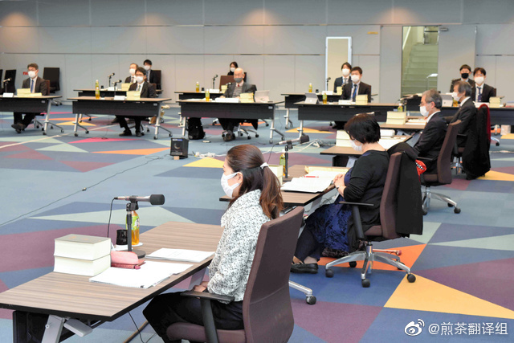
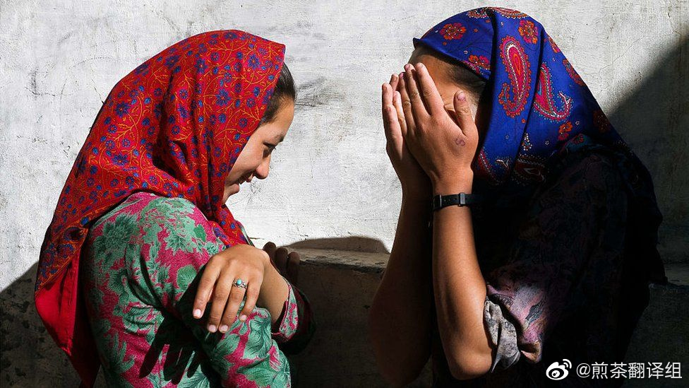
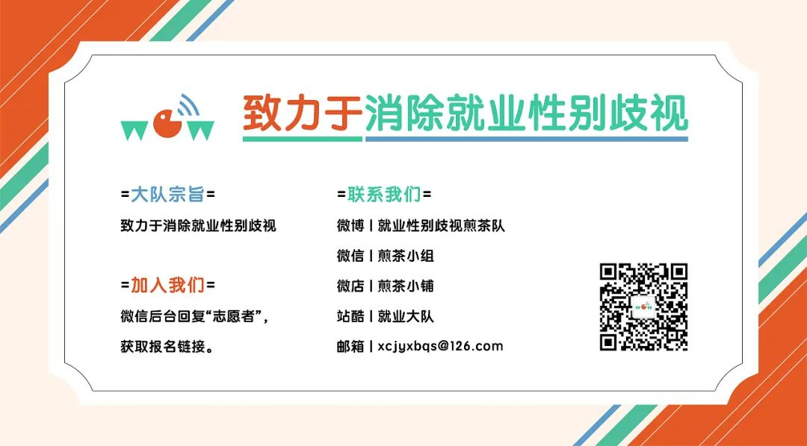
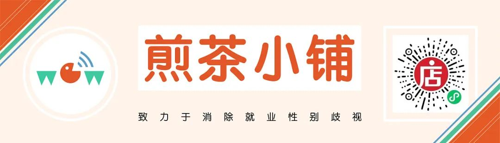

作者：rinka
封面图来源于网络
【日本】或将修正嫡出推定规定，并废除限制女性再婚时间的规定
2月1日，法制审议会（法务大臣的咨询机关）的部会上决定了民法修正的纲要案，其中包括根据孩子出生时间认定生父的相关规定（嫡出推定规定）以及废除限制女性再婚时间的相关规定。再婚后生下的孩子，原则上认定为现任丈夫的孩子。14日古川法务大臣答复之后，政府预计在2022年中的国会上提出修正案。
根据孩子出生时间认定生父的相关规定（嫡出推定规定）是自明治时期颁布民法以来，首次进行修正。现行的民法规定，夫妻离婚后300天内出生的孩子，生父认定为前夫。夫妻结婚200天之后生下的孩子，生父认定为现任丈夫。为了避免孩子被认定为前夫的孩子，有的母亲会选择不提交孩子的出生证明，这导致了许多孩子没有户籍。
纲要案维持现行法的规定的同时，设置了例外规定—母亲和其他男性再婚后出生的孩子，被认定为现任丈夫的孩子。为了应对因为怀孕而结婚的情况，结婚200天以内出生的孩子也会被“认定为现任丈夫的孩子”。
“嫡出推定规定”修正之后，离婚后100天内禁止女性再婚的规定也没有了必要性，将会被废止。否认父子关系的“嫡出否认制度”也将随之修正。过去只有父亲拥有的权利，现在将扩大到母亲和孩子。父亲得知孩子出生后，1年内提出上诉，可以否认父子关系的规定，将扩大为3年内。只要满足3年内没有和父亲连续共同生活的条件，孩子在21岁前都可以上诉否认父子关系。另一方面，以18年在东京都目黑区、19年在千叶县野田市分别发生的儿童虐待死亡事件为契机，民法的“惩戒权”也进行了重新评估。被认为是“让虐待正当化的借口”的惩戒权的规定被废止，修正案增加了禁止“体罚”和“对身心健全发展产生有害影响的言行”的规定。
（新闻来源：雅虎新闻；图片来源：朝日新闻；翻译：小安 ）

【日本】新冠疫情扩散后男女的自杀原因大不相同
关于新冠疫情扩散后女性自杀增加的问题，宫崎大学等研究小组进行了调查，发现因“育儿烦恼”、“夫妻不和”等“家庭问题”导致的自杀在增加。在新冠病毒感染开始扩大的2020年，日本国内的自杀人数为2万1081人，特别是女性自杀人数在增加。宫崎大学等研究小组在2020年1月到2021年5月的2万9938名自杀者中，以知道自杀理由的2万1027人为研究对象，进行了调查分析。结果显示，男性的自杀原因中“失业”占42.9%，“工作疲劳”占34.1%，“孤独感”增加到了25%。女性的自杀原因中“育儿烦恼”占40%，“夫妻关系不和”占39.1%，“疲于看护照料”占25%，多因“家庭内的问题”导致自杀。男女的自杀原因大不相同。研究小组指出，由于新冠疫情，人们在家工作学习的时间增加，女性的育儿、看护等负担也随之增加。🔺“男主外，女主内”的性别分工问题依然严重，居家学习、工作给许多女性带来了巨大的压力和负担。【日本】长崎县的8个女性团体向长崎县提交了要求废止和修改县内吉祥物的请愿书以2014年在长崎举办的国体为契机，以鸳鸯为原型的县内吉祥物“GANBAKUN”和“RANNBACHAN”诞生了。2月4日，女性团体代表等访问了长崎县政府，向县负责人递交了要求从性别平等的角度重新考虑吉祥物等的请愿书。请愿书里指出，吉祥物的简介里写明了吉祥物的性别和职务。“吉祥物设定了男女性别，GANBAKUN（男）是队长，RANNBACHAN（女）是副队长，级别关系、颜色和服装充满了性别刻板印象”，因此要求县政府废除该吉祥物，重新进行设计。🔺男性担任正职，女性担任辅助性的副职。蓝色代表男性，红色代表女性，吉祥物也带着人类世界的偏见和歧视。
【英国】Primark被指销售含有“严重性别歧视”的儿童服饰一位畅销作家指出，Primark销售的童装带有“非常多的性别歧视信号”。小说家Kate Long周日在社交平台分享了在切斯特分店出售的上衣图片，上面鼓动女孩们“待人和气、保持微笑、永远完美”。与之相反的是，男性服饰则告诉男孩们：“你有无限可能”、“你是制定规则的那一个”。一位Primark的发言人表示：“我们很看重包容性”。Long女士在推特上质疑了传递不同讯息可能导致的后果：“有人能察觉出其中语气的不同吗，比如叙述方面的区别？男孩们生来优秀，他们不需要考虑任何其他人。”男孩们的重点在于“去做”，女孩们的重点在于“去感受”，男孩们有求必得，女孩们则需要顾全他人。“别再告诉女孩们她们的责任是服务他人！别再告诉男孩们他们与善意和爱无关！现在难道还停滞在50年代？”Long补充道。Primark发言人补充说，他们提供了多种风格的童装以满足不同的需求，他们在近几年已经去除了婴童服饰性别特定的标签。“无论如何，我们一直在学习，我们欢迎顾客的反馈，同时也将继续做更多我们能做的”，他们表示。Long女士之前在其他店铺，比如Tesco以及 M&S进行的，关于不同性别服饰传递不同信息的发现，也引起了广泛关注。一些品牌比如Boden，也因为选择了一些标语而遭受抨击，比方说，女性服饰印着“与人为善很酷“，而男性服饰则是“天才”，或者“战斗开始”。现如今，该公司已经道歉，并表示会严肃对待性别刻板印象的议题，前几季推出性别颠覆系列便指向于此。
🔺不要小看来自生活中一点一滴的性别刻板印象的渗透。一家寿司餐厅因为在周五开业仪式之前“错误地”要求女性必须性感着装入店而道歉。这家位于萨里的Beluga餐厅的网站上显示，女性被建议穿着黑色脚踝绑带的高跟鞋搭配紧身上衣，或者选择紧身牛仔裤、半长裙或修身短裙。男士被告知不能穿运动服。在Instagram上，这家餐厅发表了真诚道歉：这些描述是很不合理，很不尊重并且冒犯的，完全不符合我们希望推崇的企业形象。“希望澄清的是，我们要求的是对于男士和女士得体的着装规范”。这一着装规定在该店开业前就引起了公众的负面反应。在他们的脸书界面上，人们给予的评价都是：“恶心的”、“性别歧视的”、“令人倒胃的”。一位评论者写道：“恭喜你们在还没开张前就进行了如此糟糕的举动”。“如果你想要一场1959年的派对，我想这没有什么问题”，另一位评价道。一位网友发出了疑问：“有哪一位自尊自爱的女士会想要踏足你们的餐厅？”在Reddit上，人们对此的反应是：“陈腐的”、“脱离现实的”、“厌恶的”。这也被一位Reddit用户形容为：“着装要求就像Jay在Inbetweeners网站上开夜店一样”。【全球】 气候变化影响了世界上的每一个人，但研究表明其对女性的影响更大 格拉斯哥Caledonian大学的气候中心从两个方面阐述这个问题。首先，极端气候加大了社会现有的不平等。其次，女性在气候会议上并没有足够好的代表人物替她们做出有效的决定。英国统计部门清晰地记录到，在新冠疫情期间，平均下来女性要比男性在原有的基础上付出更多没有付酬和保障的家务劳动和养育责任。她们同时还要兼顾到原本有报酬的工作和新冠疫情带来的种种不便。气候正义中心的一位教授表示气候变化与其他的灾难的影响没有什么不同，“当灾难来临时，女性往往要负担更多的压力，因为额外的无偿工作往往不被认可。”“所以在遭受了严重气候变化影响的苏格兰，女性想要平衡工作和私人生活的关系将会变得更难。”性别与气候变化的专家表示，“在谈判中，我们见到了许多的男性仍然在讲话中有一席之地，女性仍然充当了他们的背景角色。所以对于女性来说，这会使她们很难去表达她们的感受。”▲ 当危机发生时，更容易看出不同人群在社会中的地位是什么样，因为弱势群体总是第一个被牺牲的对象。同样，在疫情期间联合国研究表示全球女性的处境相较于往年开始下降，也只是因为男女的社会中的机会和地位并没有真正达到平等。这不是特例，只是极端情况剥露了原本就存在的危机。电视体育转播节目中，女子比赛几乎只占了20%。这个数字在不断增长，但仍然非常不够。普通观众们对此有着越来越高的需求。2019年，Odoxa的一项调查显示，80%的法国人希望看到更多的女子体育项目。而观众数量正证明了这种热潮：在2019年的女足世界杯比赛中，有多达1200万人关注法国国家队的比赛，而去年的女子手球世锦赛决赛也吸引了430万观众。但对此，电视台仍谨慎观望。因此，2014年，CSA发起了一项与国家体育部合作的行动："持续女子体育"。在这一周里，他们鼓励媒体给予高水平女运动员更多的关注。"这是一个噱头，同时也是开展这项行动的必要条件。"法国广播电台体育部主任纳塔莉·伊纳塔（Nathalie Iannetta）说。"宣传女子体育成就的重要性在于能让体育面向尽可能多的人，特别是能鼓励小女孩加入手球、网球、足球、橄榄球或排球俱乐部，或任何她们想要参加的体育活动。她们越是有鼓舞人心的榜样，就越想从事体育运动，便越会出现高水平运动员。无论是在奥运会，还是在世界杯或欧洲杯，她们都将赢得奖牌。“本周，franceinfo将重点介绍法国女运动员的表现。纳塔莉·伊纳塔说："2月14日星期一，我们对加布里埃拉·帕帕达吉斯（Gabriella Papadakis）进行了直播采访，她和她的搭档纪尧姆·西泽龙（Guillaume Cizeron）终于获得了一枚奥运金牌。这次我们主要采访加布里埃拉。我们还将对女子世界杯做一个小小的总结，我们将谈论女运动员生育的特殊性，我们将邀请像纳塔莉·佩查拉特（Nathalie Péchalat）作为嘉宾，她是法国冰联少有的女性主席之一。今年，franceinfo还将转播女子欧洲足球锦标赛、女子环法自行车赛……"。几个月前，部长玛琳·夏帕（Marlène Schiappa）提议引入均等原则：50%的体育转播需专门用于女性比赛。但纳塔莉·伊纳塔不赞成该提议："首先，这意味着你要放弃其他比赛。法国不是一个体育国家。我一直在重复这一点。这让我很难过，但事实就是这样。因此，这些频道不能用于体育的扩展，那些本就不受关注的人会受到影响。我相信，通过提高高水平女运动员的知名度，将实现模范作用。而改变心态需要时间。"【阿富汗】于六个月前重新掌权的塔利班禁止中学女生上学。由此，地下秘密学校如雨后春笋般涌现，使得女孩们可以继续学习。美国离开阿富汗已经六个月了。自重新掌权以来，塔利班只允许女孩们上小学，不允许上初中或高中。而男孩们则能够在 9 月重返中学。因此，秘密学校应运而生，以允许年轻女孩能不顾一切地继续上学。在一座位于喀布尔高地的破房子里，女孩们会一个受到掩护的底楼房间里上课。同样的课，每天会上四遍。这些年轻的阿富汗女孩处于 14 岁到 20 岁之间。她们正上着Leila老师教的英语课程。像所有同龄的年轻女孩一样，17 岁的 Moadessa 心中充满了梦想：“因为塔利班不允许女孩上学，所以我来这里继续学业。这对我来说很重要，因为我想成为一名医生！” 房主认为，她的国家的年轻女孩不能没有未来。她知道在家中开办学校所面临的风险：“在这里，我们教英语和数学。如果塔利班知道了，我们可能会出些什么事。但我愿意冒险，我们会继续教书，因为这些女孩需要教育。”塔利班似乎暂时容忍这些秘密学校。原教旨主义者承诺，女子中学将在 3 月底前重新开放，前提是要在符合所要求的伊斯兰教框架内。【印度】“穆斯林女孩是否有权戴头巾上课”的问题现在在法庭上被讨论Karnataka：“戴头巾不会让穆斯林妇女受到压迫”
Nabeela Shaikh在 30 岁时开始戴头巾。她是三个姐妹中最后一个接受它的人。
最年长的Muzna在 8 岁时第一次戴上它，她会根据周围的环境来佩戴它，直到她意识到自己无法“取悦所有人”。
在印度，公开展示信仰很常见，人们普遍佩戴头巾。但上个月，卡纳塔克邦的女学生对禁止在课堂上佩戴头巾的规定表示抗议，并以前所未有的方式强调了她们头巾的意义。
“穆斯林女孩是否有权戴头巾上课”的问题现在在法庭上被讨论。这场争论引发了暴力，分裂了校园，并阻止了卡纳塔克邦的一些穆斯林女孩上课。
印度各地的穆斯林妇女说，她们对辩论的“侵入性”感到愤怒。“我们不断被提醒，要被接纳，我们必须放弃我们的宗教信仰，”一位来自德里的女士说。她们说，被公众强烈的抗议淹没的，是她们自己选择的个人特质。那些选择戴头巾的人说，这不仅仅是一个宗教决定，而是一个因反思而诞生的决定。而那些选择不戴它的人则认为，她们的头发不是她们信仰的晴雨表。
“我没有被压迫”“人们不明白戴头巾是如何让人感到有力量的，” Nabeela笑着说。“这让他们感到困惑，所以他们评判我们。”“被压迫”通常是一个形容戴头巾女性的词。但许多人指出，拒绝思考她们戴头巾的原因、以及因为女孩拒绝摘下头巾而让她们辍学，并不是解放女性的行为。
五年前，当 Nab决定戴上头巾时，她说她遇到了“最奇怪”的反应。“我的面纱揭示了很多人的心态，”她说。“人们会问我，你受压迫吗？你觉得热吗？你用什么洗发水？有些人问我是否有头发——他们认为我得了癌症。”对她来说，头巾也是一次裁缝式的实验——她在每一个褶皱和色彩中看到了魅力。“人们认为我的头巾与我时髦的衣服和化妆格格不入。但事实并非如此，”
她说。“如果我走进一个房间，我希望人们看着我并想，那是一个穆斯林女性实现了她的目标，环游世界，并且正在蓬勃发展。”'人们看待你的方式很消耗精力'“当谈到头巾时，穆斯林妇女就沦为二元组了。如果我戴头巾，我就是传统的和受压迫的，如果我不戴头巾，我就是现代的和自由的。”Simeen Ansar说，她和姐姐开始戴头巾后很快就放弃了，因为她们的选择从未被完全接受。虽然她的姐姐在工作中面临歧视，但Simeen说人们在没预料会看到戴头巾女人的地方，会盯着她看——健身房、酒吧或派对。“人们看待你的方式真的很让人疲惫。”她说。“你拿走我的头巾，接下来怎么办？我的名字仍然是阿拉伯的。我也必须改变它以获得你的尊重吗？”
（翻译：丸子；来源：BBC 新闻）

【日本】在考试丑闻多年后，女性在日本医学院入学考试中的表现优于男性。自大学承认故意不及格的女性申请者以来，女性获得学位的人数首次超过男性根据新的政府数据，去年春天，13.6% 的女性考生通过了 81 所医学院的考试，而男性考生的这一比例13.51%。这是自教育部 2013 年开始记录以来，女性的表现首次优于男性。如今的结果与八年前的的结果相反，当时男性的及格率比女性高出 2.05 个百分点。2018 年，日本学术界因几所医学院故意降低女性候选人的成绩而受到广泛争议，对机构性别歧视的指责和要求录取要提透明度。该国十所最著名的学校承认，他们对女性有系统性的歧视以确保有足够数量的男性被录取。之前，东京医科大学被指控为教育部高级官员的儿子提供一个学位而受贿之后，基于性别录取的黑箱操纵便曝光。很多学校表示，他们故意让女性候选人不及格，是担心在全国范围内医生短缺的情况下，女性更有可能辞去医疗工作回归家庭。在被发现歧视女性候选人的学校中，2021 年有六所学校的女性录取率高于男性。录取丑闻发生后的第二年，就已经有少数学校的女性录取率高于男性。一位教育部官员表示，数据证明，女性在申请日本竞争激烈的医学院时不再处于劣势。然而，日本的女医生比例仍然明显低于其他发达经济体。卫生部2018 年的一项调查发现，只有 21.9% 的医生是女性，在经济合作与发展组织成员国中比例最低，该组织2015 年平均为 46%。▲ 只要在一个公正的系统下进行平等竞争，女性的“不适合”“不擅长”等性别歧视都会被逐个打破。但这只是第一步，如同新闻中提到“女性可能辞去医疗工作回归家庭”这种事实也要被正视。是什么导致了女性不得不回归家庭是我们下一步要问并解决的。随着韩国进入一场激烈的总统竞选，作为众多年轻女性中的一员洪熙珍认为韩国的政治已经被性别歧视，甚至是更深的厌女症所主导。多年来，面对根深蒂固的大男子主义和骚扰文化，尽管韩国女性在工作场所取得了缓慢但稳定的进步，但这场在 3 月 9 日结束的极其紧张的总统竞选却暴露出了获胜的脆弱性。保守派候选人尹锡烈和他的自由派对手李在明——都是 55 岁以上的男性——正在为他们认为对胜利至关重要的“男性”投票而战。他们越来越多地将视线集中在那些谴责性别平等政策和在竞争激烈的就业市场中丧失传统特权的年轻男性身上。“政客是把问题简单化”洪熙珍说。“他们在面对年轻男性的时候没有提出真正解决问题的政策，而是在煽动性别冲突对立，去告诉 20 多岁的男性，他们的困难是因为女性获得了太多的福利。”随着韩国人口快速老龄化、出生率直线下降、个人债务飙升、就业市场衰退和严重的不平等现象，分裂的性别政治愈演愈烈。还有来自朝鲜的核威胁越来越大，担心在美国和中国的对抗中受到挤压。然而，没有哪个竞选问题比尹锡烈要废除“性别平等和家庭部门”引起更多的争论，候选人说该部门是对男性不公平的政策。61 岁的前检察长尹也声明要对虚假的性犯罪报告进行更严厉的惩罚。批评人士说，在最近男性反对#MeToo 运动的环境下，更严厉的惩罚威胁可能会恐吓受害者挺身而出。尹锡烈的竞选活动受到该党主席李俊硕的影响，李俊硕是一名 36 岁的哈佛教育“男权”倡导者，他将女性职场平等和其他性别平等政策描述为“反向歧视”，并将女权主义政治称为“河豚毒药”。世界经济论坛在一项调查工作、教育、健康和政治代表性方面的性别差距的指数中，将韩国排在 156 个国家中的第 102 位。根据总部位于巴黎的经济合作与发展组织（Organization for Economic Cooperation and Development）的数据，韩国迄今为止在发达经济体中的性别薪酬差距最大，约为 32%，而女性在公司董事会和政治中的代表性仍然严重不足。该国创纪录的低出生率最突出的问题就是女性发现自己无法兼顾事业和家庭。尹锡烈正在利用 20 多岁和 30 多岁男性的不满情绪，他们面临着黯淡的就业市场，同时为房价飙升和婚姻和生育前景黯淡而苦恼。他们对来自女性的竞争越来越敏感，这些女性在学校的表现往往超过她们，并且更渴望打破传统的性别角色以获得职业发展。尽管许多男性坚持认为她们的女同事在工作场所更容易，比如免于强制性的 18 个月兵役。但女性已经开始更加大声地批评以男性为中心的企业文化，这种文化使她们受到骚扰，不平等的薪酬和晋升，并经常在他们生完孩子后被剥夺她们的职业生涯。纵观历史，女性在建设社会、经济和国家方面发挥了关键作用，留下了鼓舞人心的遗产——无论是在地缘政治、人文科学还是科学突破方面。然而，科学领域的性别差距仍然存在，在 STEM 领域的程度更大。研究表明，在全球范围内，女性进入 STEM 领域的可能性较小，只有 30% 的科技研究人员是女性。尽管有足够多的证据表明性别多样性促进了更大的创新，但歧视、刻板印象、缺乏支持、指导和过时的观念等障碍继续使众多女性远离这个令人兴奋和有益的领域。此外，COVID-19 对科学和工程领域的女性产生了不成比例的影响，这表明虽然这种流行病是无性别的，但它的影响却不是。这凸显了让更多女性进入科技行业的紧迫性，因为如果这些性别障碍继续存在，任何国家都无法实现其真正的科学潜力。在印度，女性占劳动力的比例不到 20%，研究表明，到 2025 年，印度实现性别平等的经济影响预计将增加 7000 亿美元的 GDP，女性在劳动力中的平等参与将使印度GDP增长27%。在经济中赋予女性权力并缩小工作领域中的性别差距是实现这一目标的关键。对于女性进入 STEM 领域并茁壮成长，拥有女性导师至关重要。有足够的证据表明，当女性有其他女性担任领导职务时，她们可以仰视、被指导，同时她们的表现会更好。女性在 STEM 领域的代表性可能存在偏差，但只有通过专门的奖学金和指导计划等创造平等机会，才能弥合这一差距。一个国家只有消除性别障碍，才能真正发挥其科学潜力。-建立支持系统和导师- 时间的需要不仅限于为女性创造更多单独进入 STEM 领域的机会。为女孩和年轻女性树立榜样是消除性别刻板印象的有力一步，就像在工作场所建立和磨练导师并在每个女性中找到支持系统一样。然而，在 STEM 学科中产生性别多样性红利不仅仅是我们如何填充教室或组织的问题，而是涉及系统性社会和心理变化的问题。这些变化包括向年轻女性介绍令人难以置信的 STEM 榜样，并确保该领域的女性得到广泛代表和赞赏。随着女性在 STEM 领域变得越来越普遍，越来越多的年轻女孩将认识到她们可以获得的各种工作机会。让年轻女性参与与现实世界问题和情况相关的实验和活动，为她们提供实践经验，这是鼓励 STEM 领域成长心态的另一种绝佳方式。鼓励对学科及其现实应用提出问题的习惯也将鼓励他们寻求答案并发现 STEM 的乐趣。让更多合格女性参与可以丰富研究项目的创造力和洞察力。事实仍然是，女性为研究和科学对话带来了独特的观点，否则这些观点在性别排斥的团队中必然会被忽略。相比之下，多元化和包容性的团队将产生更适用于更广泛受众的结果，并将消除历史上偏爱男性的任何性别偏见。▲一个国家只有消除性别障碍，才能真正发挥其科学潜力。（来源：timesofindia，Divya Gokulnath；翻译：小容）
